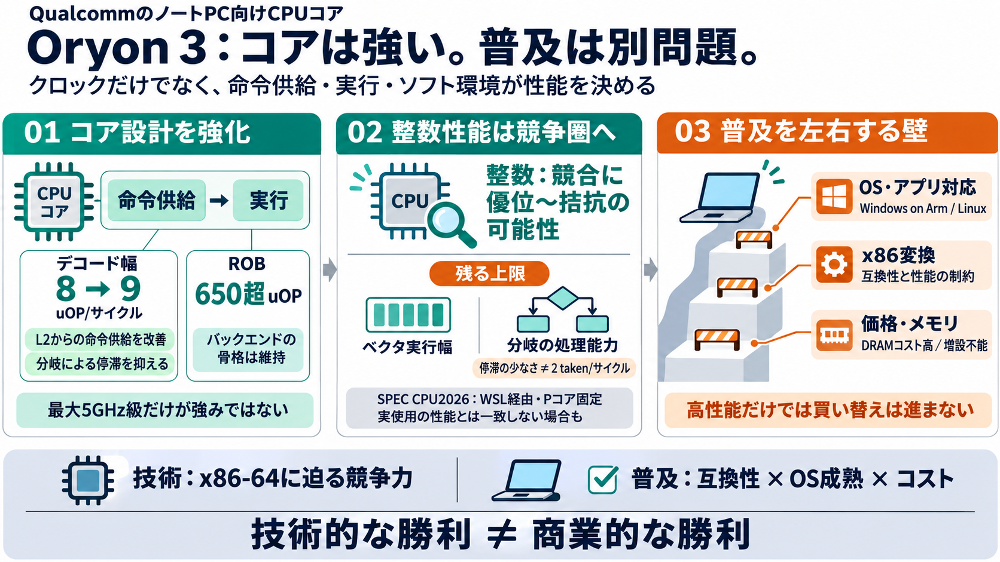

Third-generation Oryon CPU architecture_Baiduwiki
core cluster. On PC platforms (such as Snapdragon X2 Elite Extreme), it adopts a design with up to 18 cores, including 1…

コア単体は強いが、PC市場の勝敗はソフト/システムと経済が残る。
フロントエンド供給×バックエンド処理のバランスが鍵。
Windows on Arm/ Linux対応・互換性・経済が普及を左右。
Decode width 8→9（uOP/サイクル）
L2からの取り込み向上（例：4NOP/cycle程度）
ゼロバブル条件がより広いフットプリントで成立
2taken/サイクルに届かない可能性
ROB：650超（前世代同等の容量）
壊さず改善：機能追加（SVE2/SME系）を“前向きに”
競合に対して十分優位〜拮抗の可能性
条件により差異（決め手は一枚ではない）
分岐予測が停滞を抑え、実行機会を増やす
L1Dの低遅延がデータ待ちを減らす可能性
幅と処理の余地：競合の“次の段”に遅れ
メモリ順序キューやベクタ実行幅の制約が残る
Windows on Arm・Linux・アプリ対応の度合い
x86バイナリ変換が性能と互換性を左右
DRAMコスト高が価格面に波及
増設不能→“今後”へ不安→買い替え動機が弱まる
前段強化＋後段維持（デコード拡大×ROB/骨格維持）
ゼロバブル：停滞しにくい／2taken/サイクル：取る分岐を多重処理
SPECはCPU寄り：WSL/OS/コンパイラで実使用とはズレうる
OS/互換/変換が弱いと、コア性能が出ない
整数は強い可能性／弱点はベクタや分岐処理能力の上限
互換性・変換層・OS成熟・価格/コストが普及を左右
core cluster. On PC platforms (such as Snapdragon X2 Elite Extreme), it adopts a design with up to 18 cores, including 1…
Name Brand Snapdragon® X2 Elite Extreme Snapdragon® X2 Elite Snapdragon® X2 Elite Part Number X2E-96-100 X2E-88-100 X2E-…
Leveraging the best-in-class 3rd Gen Qualcomm Oryon CPU, the Snapdragon X2 Elite enables powerful and efficient multitas…
The company says its Elite chips will be made on a 3-nanometer process node. The Snapdragon X2 Elite uses a mix of Qualc…
To maintain its crown, Qualcomm hasn’t just bumped the clock speeds. The Snapdragon X2 Elite Extreme (X2E-96–100) repres…